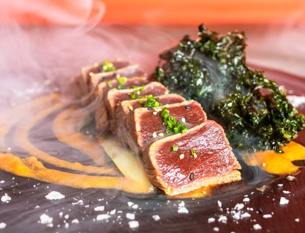
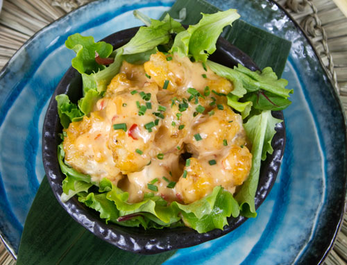
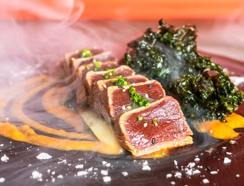
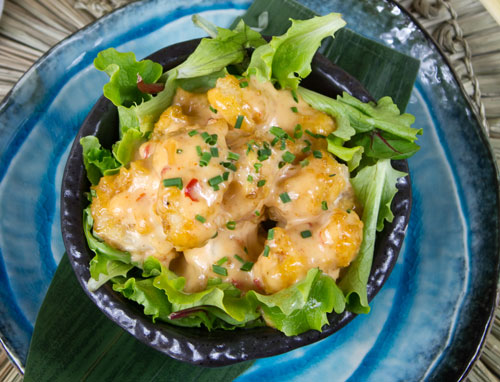

Hablamos con Sandra Segimón, la presidenta del Grupo Sushita que trajo el sushi a España hace 23 años «Hace tantos años que impresiona, pero seguimos con la misma ilusión», confiesa Sandra Segimón a COOL cuando le preguntamos por el origen de la empresa. Seis restaurantes -y el séptimo en camino- de cocina japonesa fusión -todos diferentes- en Madrid, una línea de venta de sushi a domicilio «en bandejitas» y una colección de vajillas pintadas a mano en colaboración con Eugenia Martínez de Irujo son las tres líneas de negocio del grupo empresarial que preside. «Fuimos los primeros en España en vender bandejitas y en 2015 abrimos nuestro primer restaurante Café Sushita». Sandra Segimón comenzó esta aventura en 1999 con su hermano José Manuel y su socia Natacha Apolinario. Hoy en día, están a punto de inaugurar un nuevo restaurante en La Moraleja, Madrid. «Cada restaurante cuenta una historia diferente y queremos que el cliente cuando nos visita se sienta como en su propia casa».
Localización Olvido
Calle del Olvido, 10, 28026 Madrid
+34 123 456 789